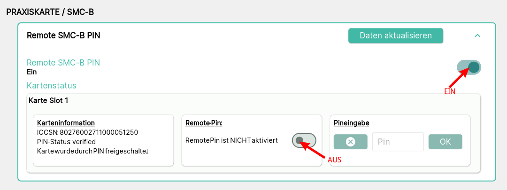
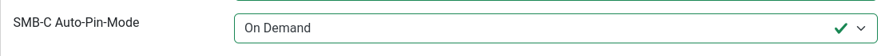

Remote PIN für SMC-B Karten
Bei neueren Kartenterminals kann man die PIN einer SMC-B-Karte remote eingegeben: entweder über eine Weboberfläche oder über ein Remote-Management-Interface (RMI).
Cocard unterstützt die Remote-Eingabe, wenn alle nötigen Voraussetzungen dazu erfüllt sind. Löst ein Anwender die Aktion VerifyPin aus, startet Cocard zunächst eine Verbindung zum Kartenterminal und wartet auf die VerifyPin-Anfrage. Parallel dazu sendet Cocard die VerifyPin-Anfrage an den Konnektor, der diese an das Kartenterminal weitergibt. Das Kartenterminal benachrichtigt dann Cocard über die eingetroffene VerifyPin-Anfrage und Cocard sendet die fest hinterlegte PIN. Der Konnektor gibt Erfolg zurück, sofern kein Fehler auftritt.
| Cocard unterstützt derzeit nur das Terminal ORGA 6141 online in der Firmware-Version 3.9.0 |
Voraussetzungen für Remote-PIN-Eingabe
Kartenterminal
| Was | Beschreibung |
|---|---|
Kartenterminal |
ProductCode == |
RMI Remote SMC-B PIN |
muss eingeschaltet sein, siehe Abbildung |

Cocard: Einstellungen beim Kartenterminal
| Was | Beschreibung |
|---|---|
SMC-B Auto-PIN-Mode |
|
|
Für die vollautomatische PIN-Verifizierung darf eine SMC-B-Karte keinen Fehlversuch haben (Verbleibende Versuche: 3). Sobald eine PIN falsch eingegeben wurde und die Anzahl der verbleibenden Versuche kleiner als 3 ist verzichtet der Hintergrundjob auf eine PIN-Eingabe. Das soll verhindern, dass eine falsch konfigurierte DEFAULT_SMC_PIN alle Karten in kurzer Zeit sperrt.
|
| Bei Nutzung des Auto-PIN-Features bitte immer erst mit einem Kartenterminal und einer Karte testen, um Fehlkonfigurationen frühzeitig zu erkennen. Im Worst-Case könnten alle SMC-B-Karten in kürzester Zeit gesperrt werden und die Eingabe einer PUK erfordern! |

Cocard-Installation/Setup
Folgende Umgebungsvariablen müssent im Setup von Cocard hinterlegt sein:
| Was | Beschreibung |
|---|---|
DEFAULT_WS_AUTH_USER |
RMI-Authentifikation: Rolle |
DEFAULT_WS_AUTH_PASS |
RMI-Authentifikation: Passwort für Rolle |
DEFAULT_SMCB_PIN=11111111 |
Environment-Variable; zur Zeit unterstützt Cocard nur eine einheitliche SMCB-PIN für alle Karten. |